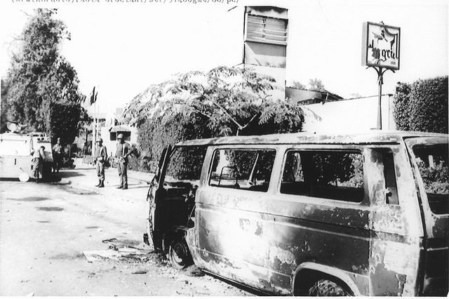
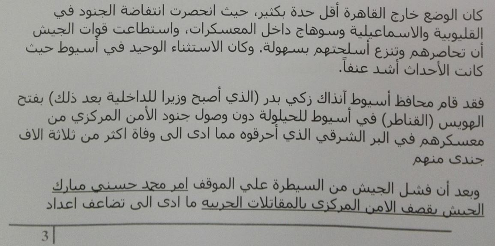
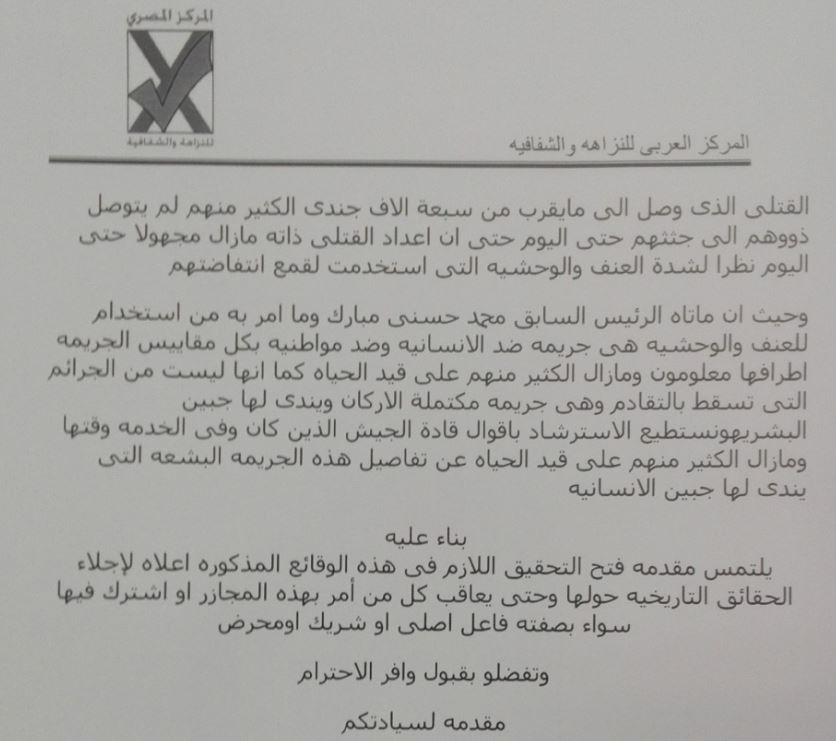
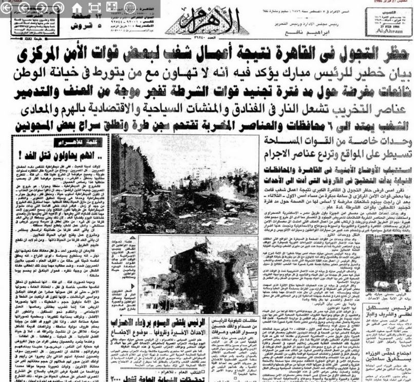
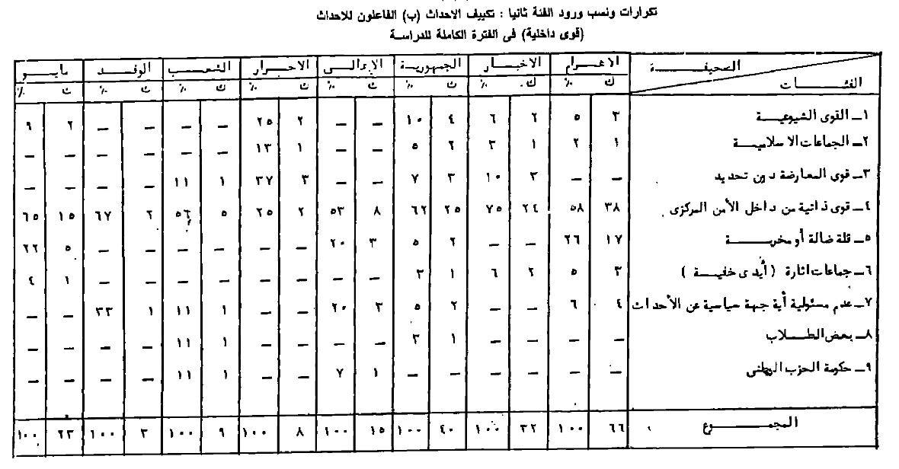

English Version
أحدث الأخبار
- الزمالك يكتسح رينجرز النيجيري بأربعة أهداف مقابل هدف وحيد
- القضاء الإداري يقضي بحل اتحاد الكرة وبطلان الانتخابات الأخيرة
- مقتل 3 أشخاص وإصابة 3 آخرين في حادث مروري بالبحيرة
- وزير الخارجية يجري اتصالاً مع رئيس المجلس الرئاسي الليبي
- عاصمة مصر تتجه لزيادة سكانية نصف مليون العام الجاري
- باولو يقود هجوم الزمالك أمام رينجرز في دوري الأبطال
- المالية تعفي المطاعم غير السياحية من ضريبة القيمة المضافة بشروط
- "القضاء الإداري" يلزم الجامعة الأمريكية بتحصيل مصروفاتها بالجنيه المصري
في الذكرى الثلاثين لأحداث الأمن المركزي.. ماذا حدث في 25 فبراير 1986؟
الإثنين 28-03-2016 PM 07:55

كتب: محمد عاطف
في 25 فبراير 1986 خرج جنود الأمن المركزي من معسكرين في منطقة الأهرامات مندفعين بخوذاتهم وبنادقهم في مظاهرات مسلحة إلى فندق الجولي فيل، وحطم الجنود واجهاته الزجاجية، وبدأوا يحرقون ما فيه، كما قاموا بإحراق فندق هوليداي سفنكس، ومبنى قسم شرطة الهرم، وفندق ميناهاوس، وبعض المحال التجارية الكبيرة في المنطقة.
اندلعت الأحتجاجات على خلفية سوء أوضاع الجنود وتسرب شائعات عن وجود قرار سري بمد سنوات الخدمة من ثلاث إلي خمس سنوات، وتخفيض مرتباتهم والتى كانت تقل عن 6 جنيهات في الشهر.
في شارع الهرم انحازت كتلة من عمال التراحيل والطلاب والعاطلين عن العملمن سكان منطقة الطالبية، إلى جنود الأمن المركزي، وبدأوا يشتركون معهم في تحطيم الكباريهات والفنادق الموجودة في المنطقة منها كازينو الليل، والأهرام، وأوبرج الهرم، والأريزونا، وخلال ساعات استطاع الجنود احتلال منطقة الهرم بأكملها بما في ذلك مداخل طريق الإسكندرية الصحراوي وطريق الفيوم وترعة المنصورية.
في الثالثة من صباح الأربعاء 26 فبراير أعلنت حالة الطوارئ وفرض حظر التجول، وفي حوالي السادسة صباحا انتشرت قوات الجيش واحتلت عددا من المواقع التي يتواجد فيها الجنود المتمردون وبدأوا في حصار الجنود.، وفي بداية يوم الأربعاء، بدأت الانتفاضة في الإنتقال إلى أغلب معسكرات الأمن المركزي الأخرى في القاهرة.
في معسكر الهايكستب القريب من مطار القاهرة في الثامنة والنصف تجمهر جنود الأمن المركزي بمعسكر لهم يقع في شارع جسر السويس، وحين وصلت القوات المسلحة إلى المعسكر اشتبك معهم الجنود وتحول الاشتباك إلى مطاردة في الشوارع الجانبية المتفرعة من جسر السويس.
أثناء محاولة الجيش تسلّم المعسكر الموجود في منطقة طرة، واجههم جنود الأمن المركزي، بإطلاق النار وبدأت طائرات الجيش الهليكوبتر بقذفهم بالرصاص وخرج جنود المعسكر بالآلاف فارين إلى الشوارع.
تأسست قوات الأمن المركزي في عام 1966 بقرار من الرئيس الراحل جمال عبد الناصر، وذلك للقيام بمهام خاصة في إطار العمل الشرطي بهدف تفادي وضع الجيش في مصادمات داخلية.
يتم اختيار المجندين بالأمن المركزي من الأدني تعليما، ممن ينطبق عليهم التجنيد الإجباري في القوات المسلحة المصرية، وهو ما يطلق عليه (الفرز الرابع)، ويتلقى مجند الأمن المركزي فترة تدريب 6 أشهر، تحتسب من ضمن مدة تجنيده البالغة 3 سنوات.
ويترأس قطاع الأمن المركزي بوزارة الداخلية حاليًا اللواء مدحت المنشاوي، الذي سبق وتولى قيادة عمليات فض إعتصام أنصار الرئيس الأسبق محمد مرسي، بميدان رابعة العدوية، في 14 أغسطس 2013، وقال اللواء المنشاوي، في تصريحات صحفية مطلع يناير 2016 إن الأمن المركزي قدم 167 قتيل وما يرقب من 5000 مصاب منذ بداية ثورة يناير 2011.
تسلسل زمني للأحداث في القاهرة والمحافظات
السفارة الأمريكية بالقاهرة بدأت إجلاء السائحين الأمريكان من المنطقة عقب اندلاع الاحتجاجات، فيما طوقت قوات من والشرطة ووحدات من الجيش، الطرق المؤدية إلى الأهرامات، بحسب ما نشرته جريدة لوس أنجلوس تايمز الأمريكية في عددها الصادر بتاريخ 26 فبراير 1986.
ونقلت الجريدة على لسان مصدر حكومي مصري لم تسمه، "ما حدث ليلة الثلاثاء خطير جدا في ظل حالة الإحباط التى تملأ مصر بسبب الأوضاع الاقتصادية الصعبة وهذا قد يؤدي لإنفجارالوضع الداخلي".
وفي صباح يوم الأربعاء، دعا الرئيس حسني مبارك الحكومة إلى اجتماعا طارئا، ثم قال في بيان إن مثيري الشغب قاموا بقتل بعض الحراس في هجماتهم على الفنادق والمحلات التجارية والملاهي الليلية بشارع الهرم، ولم يذكر عدد القتلى، فيما نقلت وكالة أسوشيتد برس عن مصادر شرطية وجود 15 حالة وفاة.
وقالت الجريدة في تقريرها عن إندلاع الأحداث، "على الرغم من أن وسائل الإعلام المصرية صورت الحادث بأنه نزاع حول مد فترة التجنيد، إلا أن مصادر رسمية أخرى أشارت إلى الخوف من أن يكون الأصوليين الإسلاميين، تسللوا إلى الشرطة ويقودون إنتفاضة المجندين.
الأمريكي كيث هيك، العضو المنتدب لمكتب ترويج الاستثمار الأمريكي، قال لجريدة لوس أنجلوس تايمز، إنه قد فلت بأعجوبة من الإصابة عندما هاجمه مجموعة من المجندين بالحجارة على سيارته وحطموا زجاجها وهو في طريقه إلى منطقة المعادي.
أغلق مطار القاهرة الدولي على خلفية الاشتباكات، وأعيد فتحه ظهر الخميس، للسماح برحيل الملكة مارغريت الثانية ملكة الدنمارك، ورئيس الوزراء اليوناني أندرياس باباندريو، الذان كانا في زيارة رسمية للقاهرة وقت إندلاع الأحداث.
وتم تعليق حظر التجول يوم لمدة ثلاث ساعات بنهار يوم الخميس، للسماح للمواطنين شراء المواد الغذائية والإمدادات الأساسية، ورصدت وكالة أسوشيتد برس، في تقرير لها، ازدحام محلات المواد الغذائية في جميع أنحاء العاصمة واصطفاف طوابير طويلة أمام محطات البنزين.
قال النائب العام المصري، محمد الجندي، إنه تم القبض على 2000 من أفراد قوات الأمن المتمردين و700 من مثيري الشغب المدنين، وفي حديث إلى الصحفيين، قال أسامة الباز، كبير المستشارين السياسيين للرئيس حسني مبارك، إن قوات الأمن استعادت السيطرة على الأوضاع داخل القاهرة والجيزة، وإن 36 شخصا قتلوا بينهم 32 متمرد.
قال المتحدث باسم وزارة الخارجية الأمريكية، برنارد كالب، في 27 فبراير، إنه لم تكن أعمال الشغب في القاهرة موجهة ضد المصالح الأمريكية أو الغربية في مصر، ولم ترد تقارير عن وقوع إصابات للأميركيين، "لدينا ثقة كاملة في حكومة الرئيس مبارك وقدرته على التعامل مع الوضع".
في الساعات الأولى ليوم الجمعة، كانت الاشتباكات مازالت تدور بين قوات الجيش وجنود الأمن المركزي، وسمع دوي إطلاق الأعيرة النارية المتبادلة لمدة 20 دقيقة بالقرب من منطقة الأهرامات.
فيما خرج القائد العام للجيش المصري، المشير محمد عبد الحليم أبو غزالة، ليعلن الإنتهاء الكامل لأعمال الشغب، وعودة الهدوء إلى القاهرة.
وفي خطبة صلاة الجمعة أجمع عدد كبير من أئمة المساجد بالقاهرة والمحافظات، على أن الاضطرابات الأمنية في مصر، يقف ورائها محرضين بأجندات خارجية من سوريا وليبيا وإيران، ووصف أئمة المساجد أعمال العنف على أنها موجهة ضد معاهدة السلام بين مصر وإسرائيل.
قبل شهر من اندلاع الاحتجاجات، كان الرئيس مبارك يخطب في أكاديمية الشرطة بالقاهرة في إحتفال وزارة الداخلية بعيد الشرطة، 25 يناير، وجاء في معرض حديثه: " لقد جسدت الشرطة على مر السنين القيم الراسخة للشعب المصرى حين التزمت بالأمانة والإخلاص فى تحمل المسئولية مهما كانت تضحياتها".
ضربة للسياحة وخسائر للاقتصاد المصري المنهك
في 6 مارس 1986، قال وزير السياحة المصري فؤاد سلطان، إن هناك إنخفاض حاد في عدد السياح المتواجدين في القاهرة عقب إندلاع أحداث الأمن المركزي، وأن 10000 سائح غادروا البلاد، محذرًا، "استمرار مغادرة السائحين لمصر سوف يزيد من الأزمة الاقتصادية".
وقال ديمتري فيلتسوس، المدير العام لفنادق هوليداي الأهرام وهوليداي سفنكس، إن الفنادق تعرضت لخسائر من المستحيل تعويضها، وقد تصل الأضرار التي لحقت بها إلى 250 مليون دولار، حسبما نشرت صحيفة لوس أنجلوس تايمز.
في 13 مارس 1986، قررت الحكومة المصرية دفع 500 دولار، تعويضا للسائحين الذين فقدوا متعلقاتهم في أعمال الشغب التى قادها جنود الأمن المركزي.
الأمريكية سينثيا كار، المدير التنفيذي لمؤسسة التعليم في مدينة نهر الهندية، نشرت في العام 2013، قصة زياراتها لمصر في وقت إندلاع أحداث الأمن المركزي، حينما كانت على متن سفينة تعليمية بصحبة 465 طالب أمريكي.
تقول سينثيا في تدوينتها المنشورة بموقع الهافنجتون بوست، إنها كانت نتنظر بشدة وصولها القاهرة، المدينة الساحرة التى حلمت كثيرًا بزياراتها، وبينما نسافر من تركيا إلى مصر، التى كان مقرر وصولنا إليها ليلة 26 فبراير 1986، فوجئنا أثناء دخولنا المياة المصرية، بطائرات حربية تحوم فوقنا، وأبلغتنا السفارة الأمريكية بالقاهرة بالتوجه إلى إسرائيل، بسبب إضطرابات أمنية.
وتضيف سينثيا، كان مقررًا أن تكون إقامتنا في فندق هوليداي إن في القاهرة مع أصدقائي، عرفت فيما بعد وصولي لتل أبيب، أنه تم تدميره في أعمال العنف.
في 24 أغسطس 2011، أمر النائب العام المستشار عبد المجيد محمود، بإحالة البلاغ المقدم من شحاتة محمد شحاتة المحامى والمدير التنفيذى للمركز العربى للنزاهة والشفافية ضد الرئيس السابق حسنى مبارك، لنيابة وسط القاهرة لمباشرة التحقيق فى الواقعة، وهو ما نفي، شحاته، حدوثه حتى الآن.
يقول المحامي شحاته محمد، في نص البلاغ، الذي حصلت أصوات مصرية على نسخة منه، كان الوضع خارج القاهرة أقل حدة بكثير، حيث انحصرت انتفاضة الجنود في القليوبية والاسماعيلية وسوهاج داخل المعسكرات، واستطاعت قوات الجيش أن تحاصرهم وتنزع أسلحتهم بسهولة.

كان الاستثناء الوحيد في أسيوط حيث كانت الأحداث أشد عنفاً، فقد قام محافظ أسيوط آنذاك زكي بدر، بفتح الهويس (القناطر) في أسيوط للحيلولة دون وصول جنود الأمن المركزي من معسكرهم في البر الشرقي الذي أحرقوه مما ادى الى وفاة اكثر من ثلاثة الاف جندى منهم، وعين زكي بدر، وزيرًا للداخلية بعد يومين من إندلاع الأحداث.
ويستكمل مقدم البلاغ في شكواه للنائب العام، بعد أن فشل الجيش من السيطرة علي الموقف أمر محمد حسني مبارك الجيش بقصف الأمن المركزي بالمقاتلات الحربيه ما أدى الى تضاعف أعداد القتلى الذى وصل إلى ما يقرب من سبعة ألاف جندى الكثير منهم لم يتوصل ذووهم الى جثثهم حتى اليوم حتى أن عدد القتلى ذاته مازال مجهولا حتى اليوم نظرا لشدة العنف والوحشيه التى استخدمت لقمع انتفاضتهم.

وفي فبراير 2014، قضت محمكمة النقض، بتأييد الحكم الصادر من محكمة جنايات الجيزة في القضية المعروفه إعلاميا بـ "سخرة المجندين" بمعاقبة كل من حبيب العادلي وزير الداخلية الأسبق، وحسن عبد الحميد مساعد الوزير لقطاع قوات الأمن المركزي، بالسجن المشدد3 سنوات، لاتهامهم بتسخير الجنود في أعمال إنشاءات وبناء دون وجه حق.

التغطية الصحفية في مصر للأحداث
رصد كتاب اتجاهات الصحف المصرية نحو أحداث فبراير 1986، الصادر عن المركز القومي للبحوث الاجتماعية والجنائية، وصف وتصنيف الأحداث من خلال تغطية الجرائد المصرية، فقد دأبت جريدة الأهرام على الإشارة إلى الأحداث على أنها أحداث شغب بصفة عامة بنسبة 28% مما نشرته حول الوقائع، وجريدة الجمهورية بنسبة 39% من إجمالي المواد المنشورة بها، والأخبار بنسبة 24%.
وحزبيًا تناولت صحيفة مايو الصادرة عن الحزب الوطني، الأحداث بوصفها أحداث شغب بنسبة 67% من الموضوعات المنشورة بها، فيما وصفت جريدة الشعب الأحداث كونها تمرد وعصيان بنسبة 53%، والأهالي بنسبة 37%، وجريدة الوفد 21%.
الجرائد القومية الثلاث، حملت المعارضة المصرية مسؤلية الشريك في صنع الأحداث، وتناولت صحيفة الجمهورية، ذلك بنسبة 10% مما نشرته حول الوقائع، والأهرام بنسبة 5%، والأخبار بنسبة 6% وتناولت الأمر ذاته صحيفة مايو بنسبة 65% من المنشور بها.



تعليقات الفيسبوك